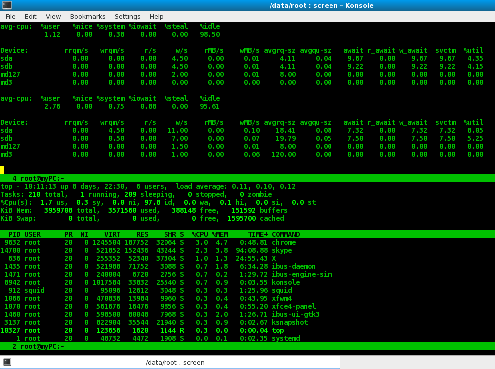

Screen — несколько экранов в одной SSH сессии
Published on 11.03.2018 by xak

Screen — очень удобная программа, если вы часто работаете в консоли, подключившись к серверу по SSH. В таком случае screen позволяет держать в одной консоли несколько разных экранов, удобно переключаясь между ними.
Screen позволяет отключиться от SSH, сохранив выполняющиеся на удаленном сервере задания.
Для установки на Ubuntu нужно выполнить команду
$ sudo apt-get install screen
После этого нужно запустить screen:
$ screen
После запуска вы увидите либо приглашение командной строки, либо «экран приветствия», нажав SPACE или ENTER в котором, вы так же попадете в shell. При этом все команды будут запущены уже «внутри» screen’а.
Для того, чтобы выйти из screen’а (выйти, а не отсоединиться) достаточно выйти из всех открытых в нем оболочек, либо же, нажать комбинацию клавиш Ctl-a \, и ответить «y» на вопрос «действительно ли вы хотите выйти».
Отсоединиться от текущего скрина, не закрывая и не завершая сессии, можно комбинацией Ctrl-a d.
Если на машине уже есть запущенная screen-сессия, и вы хотите подсоединиться к ней, то
$ screen –x
$ screen -ls
There are screens on:
2762.pts-0.debian (Detached)
2743.pts-0.debian (Detached)
2 Sockets in /var/run/screen/S-diesel.
Выбираем нужный нам screen, и присоединяемся к нему:
screen -x 2762.pts-0.debian
Названия сессий по-умолчанию малоинформативны — просто номера процессов, если есть желание запустить и использовать несколько screen-сессий для разных задач, можно придумать более вменяемые названия. Придумываем название, затем запускаем новый screen вот таким образом:
$ screen -S "job1"
где job1 — это название нашей «именнованной» сессии. Теперь в -ls мы увидим гораздо более понятное:
$ screen -ls
There are screens on:
2762.pts-0.debian (Detached)
2795.job1 (Detached)
2743.pts-0.debian (Detached)
3 Sockets in /var/run/screen/S-diesel.
и сможем подсоединиться к сессии job1, просто указав ее имя:
$ screen -x job1
Переключение между окнами screen
Как вы уже поняли, сессии сохраняются даже в то время, когда вы отключны от сервера, и все что в них запущено, продолжает выполняться. Впрочем, на этом возможности screen’а не исчерпываются. Иногда, при работе по ssh, очень хочется, чтобы было открыто сразу несколько терминалов, при этом коннектиться несколько раз облом — особенно если коннектиться нужно через несколько серверов. В этом тоже может помочь screen. Просто нажмите Ctrl — a c, и откроется еще один шелл. Перемещаться между открытыми шеллами можно либо через Ctrl — a <Цифра>, где <Цифра> — номер открытого шелла, начиная с нуля, либо Ctrl — a n/Ctrl — a p — вперед назад. Получить список открытых «окон» – консолей (и переключиться на нужную), можно комбинацией клавиш Ctrl — a «; чтобы задать нормальное имя (а не просто скучный «bash») для какого-нить окна, перейдите в него и нажмите Ctrl — a A (регистр имеет значение), затем в появившемся приглашении введите имя.
Если открыто несколько окон, полезной может быть возможность следить за активностью в каком-то из них. Например, если вы запустили «долгоиграющую» команду и интересно узнать, когда она завершится. Переходим в окно с этой командой, жмем Ctrl — a m, видим надпись типа такой: «Window 0 (bash) is now being monitored for all activity». Когда что-то в окне изменится, screen подаст звуковой сигнал, а в списке окон после номера появится символ «@».
Для просмотра вывода команды, который ушел выше границ окна, нужно нажать Ctrl-a [
Это переключит screen в Copy mode. Для выхода из этого режима просто нажмите Esc.
Конфигурируется screen с помощью файла ~/.screenrc, в вашем домашнем каталоге. Например, можно написать туда:
caption always "%{= 45}%{+b w}Screen: %n | %h %=%t %c"
hardstatus alwayslastline "%-Lw%{= BW}%50>%n%f* %t%{-}%+Lw%<"
Это даст вам все время видимый список открытых окон, и другую полезную информацию внизу экрана.
Также при запуске Screen по-умолчанию выполняются команды из файла /etc/screenrc и файла .screenrc из домашнего каталога пользователя. Многие команды которые можно использовать в файлах конфигурации были рассмотрены в таблицах выше в поле «Текстовая команда». Ниже представлен пример конфигурации Screen из файла .screenrc:
# Отключить вывод лицензионной информации при старте Screen
startup_message off
# Открыть оболочку для работы
chdir
screen -t Work
# Открыть оболочку для управления конфигурацией
chdir /etc
screen -t Configuration
# Открыть оболочку для просмотра логов
chdir /var/log
screen -t Logs
# Выбрать первое окошко после старта
select 0
Этот достаточно простой файл конфигурации открывает три окна с именами Work, Configuration, Logs, соответственно в личном каталоге пользователя, в каталоге/etc и каталоге /var/log. После запуска на экране будет находиться первое окно с именем Work. На рисунке 1 представлен пример работы Screen с этим файлом конфигурации.
Если по какой-то причине сессия screen перестает отвечать, можно завершить ее. Для этого нужно подключиться к нужной сессии, затем нажать Ctrl — a и ввести команду «:quit».
Screen завершит работу данной сессии, принудительно закрыв все окна.
Одна из основных возможностей Screen — создание и управление несколькими консольными окнами, или текстовыми приложениями в одном единственном окне терминала. В один момент времени на экране терминала может находится только одно из окон (несколько их может быть только в случае если они делят экран терминала на части). Screen позволяет быстро переключаться между окнами, сохранять и позднее возвращаться к текстовой сессии и открывать доступ к ней другим пользователям. Плюс к этому Screen позволяет давать окнам заголовки, отслеживать активность в каждом окне и обмениваться содержимым окон с помощью копирования и вставки. И, вдобавок, Screen позволяет переназначать клавиши, управлять настройкой эмуляции терминала и решать еще много небольших задач, связанных с текстовыми окнами, в которых может и не быть постоянной необходимости, но которые могут помочь выполнению административной работы в отдельные моменты времени.
На рисунке изображен Screen с тремя именованными окнами (Work, Configuration, Logs) и открытый в нем текстовым редактором Vim, с примером файла конфигурации Screen.
Screen может быть запущен с помощью консольной команды screen, но прежде всего проверим установлен ли Screen в вашей системе с помощью следующей команды:
$ which screen
/usr/bin/screen
Если команда вернула путь как в примере выше, можно сразу начинать пользоваться, в противном случае Screen может быть установлен стандартными средствами поддержки пакетов вашей операционной системы, или скачан с официального сайта http://www.gnu.org/software/screen/ .
Теперь мы можем запускать Screen, для чего просто набираем:
$ screen
После запуска на экран может появиться информация о версии и лицензии (при рассмотрении конфигурации мы рассмотрим, как можно отменить вывод данного сообщения) и в этом случае необходимо нажать клавишу «Пробел» или «Ввод», после чего мы попадаем в, на первый взгляд обычную, текстовую оболочку. Надо заметить, что в командной строке сразу можно указать команду для запуска определенного приложения, например, для запуска top надо набрать:
$ screen top
Хорошо, теперь Screen запущен, но, на первый взгляд, нет никаких внешних изменений — мы можем работать в запущенной оболочке, или использовать top.Хитрость в том, что во время работы Screen передает все нажатия клавиш непосредственно приложению, но (по умолчанию) оставляет для себя управляющие команды, начинающиеся с комбинации клавиш Ctrl + a.
Эту управляющую комбинацию клавиш можно поменять через файлы конфигурации (которые мы рассмотрим ниже), но во всех примерах будет рассматриваться только конфигурация по умолчанию. Таким образом, все клавиатурные команды Screen состоят из двух клавишных комбинации — управляющей Ctrl + a и непосредственно клавиши, или клавишной комбинации представляющей команду. Практически каждая команда также имеет своего текстового аналога, который можно выполнить, либо через файл конфигурации, либо, выполнив следующую команду:
|
КЛАВИШНАЯ КОМБИНАЦИЯ |
ТЕКСТОВАЯ КОМАНДА |
ОПИСАНИЕ | |
|
Ctrl + a |
: |
colon |
Вывести приглашение для ввода текстовых команд в интерактивном режиме |
В данном случае мы должны выполнить две клавиатурные комбинации сначала нажав Ctrl + a и затем клавишу двоеточия. При этом Screen выведет в нижней части экрана приглашение для ввода команды в виде двоеточия. Ту же самую команду, которую мы только что выполнили с помощью клавишной комбинации, можно выполнить через конфигурационный файл с помощью текстовой командыcolon, что может, например, понадобиться для вывода приглашения о вводе команд при старте, или переназначении комбинации клавиш, вызывающих это приглашение. Ниже, как и в примере выше, для каждой клавишной комбинации я буду писать соответствующие им ключевые слова, которые можно использовать в файлах конфигурации, или вводить с помощью Ctrl + a и :.
Здесь может возникнуть закономерный вопрос — а что, если приложению нужно непосредственно передать комбинацию клавиш Ctrl + a, которая уже используется в Screen как служебная? Например, такая же комбинация используется библиотекой редактирования командной строки readline для выполнения перехода в начало строки. Для этого случая в Screen предусмотрена следующая команда:
|
КЛАВИШНАЯ КОМБИНАЦИЯ |
ТЕКСТОВАЯ КОМАНДА |
ОПИСАНИЕ | |
|
Ctrl + a |
a |
meta |
Передать текущему предложению клавишную комбинацию Ctrl + a |
В предыдущем разделе мы научились запускать Screen и выучили основной шаблон для всех клавишных команд. Пришло время разобраться с командами для управления окнами. При запуске Screen создает одно окно (если только в конфигурации не указано создание сразу нескольких окон) и присваивает ему номер 0. Новое окно с командной оболочкой можно создать с помощью команды ниже:
|
КЛАВИШНАЯ КОМБИНАЦИЯ |
ТЕКСТОВАЯ КОМАНДА |
ОПИСАНИЕ | |
|
Ctrl + a |
c |
screen |
Создать новое окно |
При этом Screen создаст новое окно и присвоит ему следующий по порядку номер.В нашем случае новым окном будет окно с номером 1.
Теперь у нас есть уже два текстовых окна, из которых текущим является только что созданное окно с номером 1, а окно с номером 0 находится в фоновом режиме. Но, надо заметить, что даже если окно находится в фоновом режиме, оно может воспринимать вывод запущенного в нем приложения, как если бы оно было текущим. Например, мы могли бы запустить в окне 0 процесс, который выводит дополнительную информацию через определенные промежутки времени (для примера это может быть команда tail -f) и затем переключиться в окно 1 для работы в текстовом редакторе. Через какое-то время, если мы захотим посмотреть, что происходит в окне 0, мы можем переключиться в это окно и увидеть весь вывод работающего там процесса. Затем можно переключиться обратно в окно редактирования.
В предыдущем параграфе я описал пример с переключением между окнами, но пока не сказал какие команды для этого используются. Рассмотрим подробнее наиболее часто используемые команды для управления окнами:
|
КЛАВИШНАЯ КОМБИНАЦИЯ |
ТЕКСТОВАЯ КОМАНДА |
ОПИСАНИЕ | |
|
Ctrl + a |
w |
windows |
Выводит список номеров и заголовков всех окон в нижней строчке экрана |
|
Ctrl + a |
« |
windowlist |
Выводит интерактивный список номеров и заголовков всех окон из которого можно выбрать окошко для переключения |
|
Ctrl + a |
Номер окна |
select |
Выбор окна по номеру. Например, команда Ctrl + a и 0 делает текущим окно с номером 0 |
|
Ctlr + a |
n |
next |
Переключиться на следующее по порядку окно, или на первое окно если мы находились в последнем окне |
|
Ctrl + a |
p |
prev |
Переключиться на предыдущее по порядку окно, или на последнее окно если мы находились в первом окне |
|
Ctrl + a |
‘ |
select |
Вывести приглашение ввода номера окна для переключения |
|
Ctrl + a |
Ctrl + a |
other |
Переключиться на последнее использованное окно |
|
Ctrl + a |
N |
number |
Показать номер и заголовок текущего окна |
|
Ctrl + a |
A |
title |
Установить заголовок текущего окна |
|
Ctrl + a |
k |
kill |
Принудительное закрытие окна, например, в случае если приложение не удается закрыть обычным способом |
При закрытии какого-либо из окон номера других окон не меняются и в нумерации появляются «дырки», которые позднее могут быть заполнены новыми окнами.Хотя Screen имеет команду для изменения номера окна, она здесь не рассматривается и остается для самостоятельного изучения. В случае, если закрыты все окна, Screen завершает свою работу и выводит сообщение:
[screen is terminating]
Выше мы научились запускать Screen и управлять окнами — создавать их, переключаться от окна к окну, присваивать имена и закрывать. Теперь рассмотрим работу с содержимым окон — копирование и вставку текстового содержимого одного окна в другое, мониторинг окон, сохранение текстовой копии экрана и другие похожие задачи:
|
КЛАВИШНАЯ КОМБИНАЦИЯ |
ТЕКСТОВАЯ КОМАНДА |
ОПИСАНИЕ | |
|
Ctrl + a |
M |
monitor |
Включить/выключить мониторинг активности для текущего окна. Когда мониторинг включен и в окне находящемся в фоновом режиме производится вывод текста, в служебной строке выводится информация об активности. |
|
— |
— |
silence |
Включить/выключить мониторинг отсутствия активности для текущего окна. Когда мониторинг включен и в окне находящемся в фоновом режиме некоторый период времени не производится вывод текста в служебной строке выводится информация об отсутствии активности. |
|
Ctrl + a |
h |
hardcopy |
Записать текстовое изображение текущего окна в файл hardcopy.номер_окна в каталоге Screen по умолчанию. |
|
Ctrl + a |
H |
log |
Включить/выключить трассировку текста текущего окна в файл screenlog.номер_окна в каталоге Sccreen по умолчанию. |
|
Ctrl + a |
[ |
copy |
Войти в режим копирования. Дополнительные команды этого режима описаны ниже. |
|
Ctrl + a |
] |
paste |
Вставить в окно текст из регистра по умолчанию (куда он предварительно был скопирован с помощью команды выше). |
В режиме копирования Screen запускает текстовый редактор похожий на редактор Vi. Наиболее часто используемые команды редактора:
По умолчанию Screen оставляет видимым на экране только одно логическое окно, но при желании есть дополнительная возможность разделить экран терминала на горизонтальные регионы. Таким образом, можно отображать сразу несколько окон на одном экране терминала. Рассмотрим подробнее команды для работы с регионами экрана:
|
КЛАВИШНАЯ КОМБИНАЦИЯ |
ТЕКСТОВАЯ КОМАНДА |
ОПИСАНИЕ | |
|
Ctrl + a |
S |
split |
Разделить текущее окно, или регион на два новых региона. При этом размеры всех регионов меняются для получения дополнительного пространства на экране и в новом регионе отображается пустое окно. |
|
Ctrl + a |
Tab |
focus |
Переместить текущий фокус отображения на регион ниже, или на верхний регион если текущим является самый нижний регион. |
|
Ctrl + a |
Q |
only |
Закрыть все регионы кроме текущего |
|
Ctrl + a |
X |
remove |
Закрыть текущий регион |
На рисунке 2 изображен Screen с тремя именованными окнами (Work, Configuration, Logs) и разделенным на два региона экраном. В верхнем регионе открыто окно Work с текстовым редактором Vim и примером файла конфигурации Screen. В нижнем регионе окно Configuration с частью общего файла конфигурации /etc/screenrc.
И в завершение, мы рассмотрим одну из самых популярных возможностей Screen.Представим следующую ситуацию: системный администратор, находясь дома, заходит на удаленный сервер, открывает несколько окон, запускает необходимые задачи, затем закрывает соединение и едет на работу. На работе он опять заходит на тот же сервер и восстанавливает открытые дома окна с результатами выполненных задач. Звучит немного фантастично? Ни в коем случае! Консольные сессии Screen как раз и предназначены для осуществления этой задачи. Они позволяют отсоединить от терминала текущую сессию Screen со всеми окнами и выполняемыми приложениями и, затем в любой момент времени присоединиться к ней опять. При этом все выполняемые под Screen приложения будут продолжать работать и использовать свои окна для вывода информации. Плюс ко всему консольных сессий может быть несколько, но в этой статье мы не будем на этом подробно останавливаться.
Рассмотрим команды отсоединения консольной сессии от терминала:
|
КЛАВИШНАЯ КОМБИНАЦИЯ |
ТЕКСТОВАЯ КОМАНДА |
ОПИСАНИЕ | |
|
Ctrl + a |
d |
detach |
Отсоединить консольную сессию и оставить ее запущенной в фоновом режиме. При этом Screen пишет:[detached] |
|
Ctrl + a |
D D |
pow_detach |
Отсоединить консольную сессию, оставить ее запущенной в фоновом режиме и послать родительскому процессу Screen сигнал HANGUP. При запуске Screen из удаленного терминала это означает отсоединение Screen и затем закрытие соединения. При этом Screen пишет:[power detached] |
|
Ctrl + a |
z |
suspend |
Отсоединить консольную сессию и оставить ее запущенной как фоновый процесс родительской командной оболочки. В этом случае для восстановления сессии кроме команд описанных ниже могут быть использованы стандартные команды управления фоновыми процессами командной оболочки |
|
Ctrl + a |
Ctrl + |
quit |
Закрыть все окна сессии и выйти из Screen.Надо заметить, что многие дистрибутивы переопределяют клавишную комбинацию для этой команды, но текстовую команду можно использовать в любом случае |
Чтобы присоединиться обратно к отсоединенной сессии, или посмотреть список доступных сессий, необходимо запустить Screen с одним из следующих ключей:
|
КОМАНДА ДЛЯ ЗАПУСКА SCREEN |
ОПИСАНИЕ |
|
screen -r |
Присоединиться к отсоединенной сессии. |
|
screen -R |
Присоединиться к первой подходящей отсоединенной сессии.Это может быть полезно в случае если используется несколько сессии. |
|
screen -x |
Присоединиться к уже работающей сессии. |
|
screen -ls |
Вывести список доступных сессий. |
Screen имеет огромное количество различных возможностей и, практически, невозможно описать их все в одной статье, поэтому некоторая часть функциональности осталась «за кадром». Вот некоторые возможности/настройки Screen, которые не были рассмотрены выше и остаются для самостоятельного изучения:
Screen — это программа с большой историей, надо заметить, что первая версия появилась в 1987-м году. На данный момент, к Screen, практически, не добавляется новых возможностей (одной из причин может быть наличие уже большого их количества на данный момент) и производится, в основном, только исправление ошибок. Если кому-то не нравится относительная «старость» Screen, или не нужно такое большое количество возможностей, то можно обратиться к одной из следующих программ: